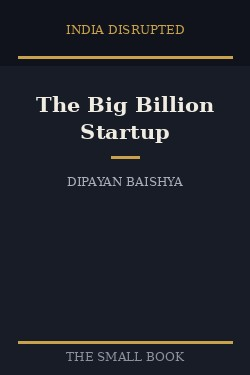

Library › Business & Startups
Big Billion Startup: The Untold Flipkart Story — Summary & Key Lessons

Two ex-Amazon employees sold books from a Bangalore apartment and built India's internet bazaar, then sold it to America.
📖 OPEN THE FULL INTERACTIVE BREAKDOWN →🌐 Read it in Hindi, Hinglish, Gujarati, Tamil & 22 more languages — free, with audio.
💡 The Big Idea
Flipkart proved that world-class internet companies could be built in India, for India. Sachin and Binny Bansal (not related) started in 2007 with online book sales because books were easy to ship and hard to buy outside big cities. What made Flipkart win was not the website, it was solving Indian e-commerce's real problems: cash on delivery, building its own logistics (Ekart), and fighting a brutal price war against Snapdeal and Amazon India. The ending carries the real lesson: unable to raise money on its own terms against Amazon, the board sold to Walmart for about $22 billion in 2018, a huge exit for investors and a complicated moment for the idea of an Indian-owned champion.
🧠 The 8 Key Lessons
Lesson 1: Start Where Trust Is Missing
The Apartment Years
Flipkart began with books because buying them in India was painful: limited stock, no returns, no trust in online payment. Founders should look for markets where the existing experience is broken, not where technology is shiny. A category with real friction gives a startup room to be dramatically better.
📖 Example: Sachin Bansal personally delivered the first orders in Bangalore, including one customer who ordered the same book twice to test whether returns actually worked. That story shaped the company's obsession with trust. Read the full example →
⚡ Do this: List three things people around you buy with frustration. Pick the one you can make dramatically easier, not marginally cheaper.
Lesson 2: Solve the Payment Problem Nobody Else Would
Cash on Delivery
Most Indians had no credit cards and distrusted online payments. While global playbooks said e-commerce means prepaid orders, Flipkart bet on cash on delivery, accepting courier-side collection costs, fake returns and heavy reconciliation work. Serving customers as they are, not as your model wants them to be, opened the whole market.
📖 Example: Flipkart's COD share of orders crossed 60 percent, a level global experts called madness. Competitors who copied the playbook late discovered Flipkart had already learned the operational tricks that made COD survivable. Read the full example →
⚡ Do this: Find the one behavior your market insists on that your industry calls wrong. Build for that behavior instead of fighting it.
Lesson 3: Own the Pipes When the Pipes Decide the Experience
Ekart and the Supply Chain
When third-party couriers failed pickups, lost parcels and refused cash collection, Flipkart built Ekart, its own logistics network. Owning delivery gave control over speed, returns and customer trust, and later became a business of its own serving other companies. Vertical integration is a defensible answer when quality of service is the product.
📖 Example: Ekart grew into India's largest last-mile logistics networks, delivering for other marketplaces after Flipkart's marketplace opened up. The cost center built in desperation became a profit-making asset. Read the full example →
⚡ Do this: Ask which step of your customer's experience you secretly deplore because a vendor controls it. Price what it would take to own that step.
Lesson 4: Big Market, Brutal War: Price Wars Are a Test of Balance Sheets
The Discount Wars
Indian e-commerce became a war of discounts funded by venture capital. Flipkart's Big Billion Day sale in 2014 promised a festival and nearly collapsed under traffic and fraud; Snapdeal burned billions chasing the same customer; Amazon committed $2 billion and then far more. In a price war, the winner is rarely the most loved company. It is the one whose investors can fund the longest siege.
📖 Example: On Big Billion Day 2014, Flipkart sold $100 million of goods in ten hours, then faced cancelations and regulator attention as prices flickered. The sale became an annual weapon that taught India to wait for discounts, a habit that squeezed margins for everyone. Read the full example →
⚡ Do this: If your growth plan assumes out-spending a bigger rival, write down your total available war chest and theirs. Be honest about who starves first.
Lesson 5: Founders Age Into Roles Faster Than Companies Adapt
Two Sachins
Sachin Bansal moved from coding to CEO to chairman in a decade, and the company kept re-creating his role. Binny grew into operations leadership while professional executives like Kalyan Krishnamurthy, sent by the largest investor Tiger Global, took day-to-day control. Founder evolution is not a promotion ladder; it is a series of reinventions that many founders and boards handle badly.
📖 Example: By 2016 the CEO seat moved from Sachin Bansal to Krishnamurthy under investor pressure. Sachin, reportedly against it, remained executive chairman until the Walmart sale pushed him out entirely, with a reported billion-dollar severance and a public exit. Read the full example →
⚡ Do this: Every 18 months, write down the one skill your current role demands that you lack. Hire for it honestly or learn it publicly.
Lesson 6: SoftBank Changed the Game With One Check
The Capital Wars
In 2017 SoftBank pumped $2.5 billion into Flipkart at a markdown, took a huge stake, and started pushing for a consolidation that would end the war. When capital concentration happens in a market, strategy starts being written in other people's boardrooms. Flipkart's independence effectively ended the day its largest shareholder wanted an exit more than a fight.
📖 Example: SoftBank had also funded Paytm and Ola and had just backed WeWork globally. Its India thesis wanted one big e-commerce asset it could sell to the highest bidder. Walmart, needing an answer to Amazon, paid $22 billion for 77 percent in 2018. Read the full example →
⚡ Do this: Know who owns how much of your company and what THEIR exit looks like. Their timeline, not your mission statement, decides your last chapter.
Lesson 7: The Exit That Ended a Dream and Started Ten Thousand
Walmart
The Walmart sale made many employees rich through ESOP buybacks and minted India's first true startup wealth wave, but it also meant India's largest e-commerce success would be American-owned, and Sachin Bansal walked away. The exit validated the ecosystem while quietly closing the fantasy of Flipkart as India's Amazon. Founders should decide early what endgame they are actually playing for.
📖 Example: Thousands of current and former employees received payouts in one of India's largest ESOP buybacks, fueling the next generation of founders and angel investors. Sachin Bansal invested his proceeds into Navi, banking and fintech, starting again. Read the full example →
⚡ Do this: Write your endgame in one sentence: build forever, sell big, or merge strong. Then check whether your current cap table can even allow it.
Lesson 8: Trust Compounds Faster Than Discounts
What Actually Won
Discounts brought triers; returns, replacements and delivery promises brought keepers. Flipkart's early edge was obsessive service in a market that expected betrayal: easy returns, order tracking, phone support in local languages. Every competitor could copy a discount. Few could copy a decade of kept promises.
📖 Example: Customers famously ordered phones online, held the parcel and the cash, and asked the deliveryman to open the box and switch it on before paying. Ekart trained its couriers to do exactly that, turning the moment of maximum suspicion into the moment of maximum loyalty. Read the full example →
⚡ Do this: Name your single most trust-breaking moment in the customer journey. Redesign that moment this month, even if it costs margin.
✅ 5-Step Action Plan
- Pick a broken-experience market and serve the customer the industry refuses to serve.
- Decide which experience-critical pipe you must eventually own, and start the cheapest experiment toward it now.
- Model your cash runway against your most aggressive competitor before entering any price war.
- Audit your cap table annually: who holds power, what do they want, when do they want it?
- Fix the single most trust-breaking moment in your journey and make it your signature.
⚠️ When This Doesn't Work
This is a journalist's reconstruction, not a founder memoir: quotes and internal motives come from interviews and reports, and key players (especially Tiger Global and Walmart) never told their side in full. Use it as a strategy case, not an audited history. The Indian e-commerce story also changes yearly, so treat market-share claims as a snapshot of 2018, not today.
💀 The Graveyard Proves It
⚔️ Snapdeal — The $6.5 Billion Startup That Refused the War — and Lost Everything. Burn: Peak $6.5B valuation → sold for scraps (~$40M); 80% of staff fired. Read the full case study →
💬 Best Quotes from Big Billion Startup: The Untold Flipkart Story
- “India first, no matter what it takes.”
- “In e-commerce, the company that controls delivery and trust controls the market.”
- “Every big company is a startup that survived its own success.”
Interactive version: mark lessons as read, listen in your language, share quote cards.